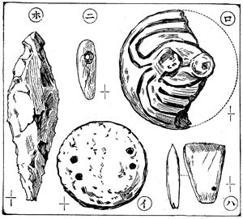

―― ひ？［＃「 ひ？」はママ］――燒土層を成す――土器製造所か――土器の葢――貝塚曲玉の［＃「貝塚曲玉の」は底本では「貝 曲玉の」］一種――
馬籠の
貝塚と
根方［＃ルビの「ねがた」は底本では「ねかた」］の
貝塚とは、
池上街道を
挾んで
兩方に
有る。
併し、
概［＃「 概」はママ］我々はそれを
馬籠の
名の
下に一
括して
居る。
別に
理由は
無いが、
最初は
根方の
貝塚をも、
馬籠だと
信じて
居たからで。
地名表には
根方を
目方としてある
爲に、
他を
探して
居て、
根方を
過ぎながら、それとは
知らなかつたのだ。
余の
最初に
此地を
探檢したのは、三十五
年の十二
月二十六
日であつた。それから
殆ど
毎週一
度は、
表面採集に
通つて
居た。
茶店の
老人夫婦とは
懇意に
成つて『
旦那又石拾ひですか。
然う
始終見えては、
既う
有りますまい』と
笑はれる
位にまでなつた。
打石斧、
磨石斧、
石鏃、
把手、
破片、
土瓶の
口、そんな
物は、どの
位ゐ
數多く
採集したか
知れぬが、
未だ
發掘をして
見た
事が
無いので、
茶店の
息子を
介して、
地主の
政右衞門といふ
人を
説き、
其人の
持地を
發掘する
事と
成つた。
三十七
年九
月十四
日、
幻翁望生の
二人と
共に
余は
馬籠に
行き、
茶店に
荷物や
着物を
預けて
置き、
息子を
人夫に
頼んで、
遺跡に
向つた。
それは
根方地で、
街道から
南面し、
右手に
小徑がある、それを
曲つてから、
又右手の
畑が
目的地だ。
破片は
出るけれど、
如何も
思はしい
物がなく、
漸く
底拔土器を
一箇余が
得た
位ゐで、
此日は
引揚げた。
同月二十三
日には
幻望二
子の
他、
玄川子を
加へて四
人で
掘つた。
今度は、
小徑の
左方の
緩斜面を
成す
芋畑である。
幻翁は
土器を二三
箇出した。

第四圖（武藏馬籠）
イ（土器蓋） ロ（朱塗土器蓋） ハ（磨石斧） ニ（曲玉） ホ（石匙）
余は
大把手の
破片と、ボロ／＼に
破壞れかゝつた
土器一箇と、
小磨石斧一
箇（第四圖
ハ參照）とを
得た。
玄子朱塗土器の
蓋（第四圖
ロ參照）を、
望生も
亦土器の
蓋を
得た。
其所へ
活東花舟二
子が
應援として
遣つて
來たので、
同勢六
人と
成り、
實に
賑やかな
發掘であつた。
同月二十八
日には、
幻翁玄子と
余との三
人で
出掛けた。
今日は
馬籠方で
街道を
左に
曲つた
小徑の
左手で、
地主も
異なるのである。
此所は
先年、
幻翁［＃ルビの「げんおう」は底本では「げん う」］が、
香爐形其他の
大珍品［＃ルビの「だいちんぴん」は底本では「だいちいぴん」］を
出した
遺跡の
續きなので、
如何にも
有望らしく
考へられたのである。
人夫として
茶店の
息子が
鍬を
取つたが、
間もなく
石匙を
掘出した。（第四圖
ホ參照）
貝層は
極めて
淺いが、
其下に
燒土の
層が
有つて、
其中に
少からず
破片がある。
幻翁の
言に
由ると、
香爐形の
出た
層と
同一だといふ。
今日は
香爐形以上の
珍品を
掘出したいと
力味かへつて
居ると、
余は
磨石斧を
其燒土の
中から
掘出した。
更に
猛進したが、
如何も
思はしくなく、
却つて
玄子の
方が
成功して、
鍋形の
側面に
小なる
紐通しのある
大土器が、
殆ど
完全で
出た。
此燒土に
就て、
武内桂舟畫伯の
説がある。
氏は
陶器通の
立場からして
考へて
見たので、
土が
燒て
層を
成すまで
火を
焚くといふのは、
容易でない。
餘程の
大火を
焚かなければ、
馬籠にて
見たる
如き
跡を
遺すものでない。
竈とか、
爐とか、それ
位の
火の
爲に
出來たのでは
恐らくあるまい。
土器製造の
大窯の
跡かなんぞではないだらうかといふのである。
或は
然うかも
知れぬ。
同じ
式、
同じ
紋。
瓜を
二ツの
類型土器が
各地から
出るのである。それ
等の
數から
考へても、
大仕掛を
以て
土器を
製造したと
云へる。
石器時代に
現今の
如き
陶器窯を
造つて、
其所で
土器を
燒いたか
否か、それは
未だ
輕々しく
言切れぬが、
馬籠に
於ける
燒土層の
廣大なるを
見て、
然うして
桂舟畫伯の
説を
聽いて
見ると、
此大仕掛の
土器製造といふ
事に
注意を
爲す
［＃「爲す」はママ］には
居られぬのである。
十
月九
日、
此日は
單獨で
行き、
第三
回目發掘の
場所より二三
間下の
大根畑［＃ルビの「だんこんばたけ」はママ］を
發掘して、
第四
圖イの
如き
土器の
蓋を
得た。
土器にキツチリ
合つた
儘で
蓋は
未だ
發見されて
居らぬ。
實は
實、
蓋は
蓋として
出て
居るが、
形式から
考へても、
如何しても
土器の
蓋でなければならぬ
物が
各所から
出て
居る。
蓋の
突起に
就ては、
中央に
一箇の
突起を
有するのと、
二箇の
突起を
有するのと、
二箇の
突起が
上部に
於て
合し
居るのと、
大概［＃ルビの「だいがい」はママ］此三
種に
區別する
事が
出來ると
思ふ。
余の
發見したのは
此三
種の
例外で、
突起の
無いのである。
其代り、
兩端に
二箇宛［＃ルビの「ふたつづゞ」はママ］の
小孔が
穿つてある。
紐に
類した
物を
通して、それを
抓む
樣にしたのかも
知れぬ。（
此類品、たしか
福島縣下新地貝塚から
出て
居りは
爲ぬか）
其後又一
回、
此所を
掘つたが、
格別の
物は
出なかつた。
發掘はそれ
切りであるが、
表面採集にはそれからも
度々行つた。
三十九
年五
月十九
日に
行つた
時には、
美麗なる
貝塚曲玉の一
種を（第四圖
ニ參照）
表面で
得た。
それだから、
如何しても
馬籠は
捨てられぬ。
其忘れ
難き
味に
引かされて、
行く
事は
行くが――
行く
度に
思出しては、
歸途に、つい、
泣かされる。――いつも
歸る
時は
日暮になる。
然うして
失敗でもして、
一人寂しく
歩いて
居ると、あゝ、あの
時、
二人連［＃ルビの「ふたりつれ」はママ］で
後から
來た
活東と
花舟と、あゝ、
二人共死んで
了つた。
茶店の
息子も
能く
忠實に
働いて
呉れたが、あれも
死んだ。
這んな
事を
考へ
出した
時には、
仕方が
無いので――
併し、三千
年前の
石器時代住民は、
今日までも
生存［＃ルビの「せいそん」はママ］して
我等と
語る――と
云つた
樣な
事を
思浮べて、
強て
涙を
紛らすのである。